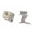

Things used in this project
Hardware components |
|

|
Blues Notecard (Cellular) |

|
Blues Notecarrier A |
Software apps and online services |
|
| The Things Industries The Things Stack | |
Hand tools and fabrication machines |
|
|  | PCBWay 3D Printing |
| Sensor Assembly, for use with EC1201A Soldering Iron | |
Story
Compact and Portable Mobility Assistance in an Urban Environment Introduction
Most of the urban settings present a lot of challenges to people with mobility impairments.
Traditional aids like canes and walkers are unsatisfactory in solving various physical barriers which include stairs, high curbs, or uneven ground. This project will be concerned with developing a compact, scalable, portable system that makes use of current hardware and software to improve navigation for users with mobility impairments. It shall involve the following modules:
Smart Cane with Sensors: This will be an intelligent cane with integrated sensors that can detect obstacles or height changes on the terrain and are capable of giving feedback to users in real time through a series of vibrations or sounds.
Integrated GPS Navigation: The smart cane shall integrate a GPS system that will be employed in providing real-time location and accessible route information.
Objective
This project has the objective of coming up with a single integrated mobility aid that incorporates sensory feedback coupled with GPS navigation to safely and efficiently navigate urban environments by people with mobility impairments. The system will be designed to be compact, portable, and user-friendly to guarantee easy integration within the daily life of the user.
Component 1: Smart Cane with Sensors
Overview
The Smart Cane will have a design that allows it to detect obstacles and changes in terrain using a range of sensors. These sensors will include ultrasonic sensors for obstacle detection and accelerometers to detect changes in terrain. The cane will feed back to the user using vibrational or audio signals.
Hardware
These will be used to detect obstacles in the way or path using ultrasonic sensors. The distance of the objects is determined by the sending of ultrasonic waves by this sensor and calculating the reflection time of waves. For detecting change-of-terrain-like functionalities-from smooth grounds onto uneven grounds-accelerometers will come into play. Accelerometers basically work by measuring acceleration forces along different axes, thereby aiding the system to conclude the nature of the ground.
Microcontroller: A central processing unit that processes data from sensors and sends signals to the feedback mechanism. Here, an M5Stack Core2 will be used as a microcontroller because it is versatile and can be integrated with a wide variety of sensors.
Software
The Smart Cane is going to be programmed in such a way that it will process sensor data and give proper feedback to the user. The software is to be made using Arduino IDE, which is supported by M5Stack Core2.
Component 2: Integrated GPS Navigation
Overview
The GPS navigation system will be integrated with the Smart Cane to provide real-time location data and guide users through accessible routes. This system shall utilize GPS technology in order to provide turn-by-turn directions while alerting users about nearby accessible routes.
Hardware
GPS Module: It will receive the location data; in this project, a U-blox NEO-M8N GPS module is used owing to great precision and reliability. Bluetooth Module: A Bluetooth module is connected for facilitating the GPS system with the Smart Cane by broadcasting the position data to any smartphone or device that can connect via Bluetooth. Software
The GPS navigation system will interface with a mobile application to process GPS data and then give navigation instructions. The application will be implemented in Google's Android platform.
Integration and Testing
Integration
This system integrates the Smart Cane with a GPS navigation system into one device. Both processing of sensor data and communication with the GPS module would be controlled by the M5Stack Core2. It would send location data to the mobile app via Bluetooth.
Testing
Sensor Accuracy: Simulations of various obstacles and terrains should be performed to check for accuracy in the detection of obstacles and sensing of terrain.
GPS Functionality: Its accuracy and reliability in varied urban settings need to be confirmed.
Usability Testing: Conduct usability testing in order to make sure that feedback mechanisms (vibration, sound) are intuitive and serve their purpose. Conclusion
The proposed system of mobility aid is focused on radically enhancing the urban mobility of individuals who suffer from severe impairments in terms of mobility. Smart sensors along with GPS navigation comprise its design, and a whole system for addressing issues related to physical barriers and enhancing general mobility. The project applies not just state-of-the-art technology but also holds immense potential to bring about a change in the lives of the end users targeted.
References
ETH Zurich: for providing engineering and technological know-how in particular in the design of high-tech sensor systems.
Blues: For developing small, reliable Bluetooth modules.
Google: For using the Android platform and mapping services within the mobile application.
M5Stack: For its versatile and powerful microcontroller units in the Smart Cane.
PCBWay: For providing excellent PCB manufacturing services to create custom circuitry in Smart Canes.
Valuable sensors are attributed to the novelty of the sensor technologies in the detection of obstacles and changes in terrain. The proposal now provides the detailed explanation of system development and integration involving sensor technologies and GPS navigation to assist individuals with mobility impairments. This, therefore, will be implemented based on inputs from various technology providers who will extensively test for its efficacy and usability in the real world.